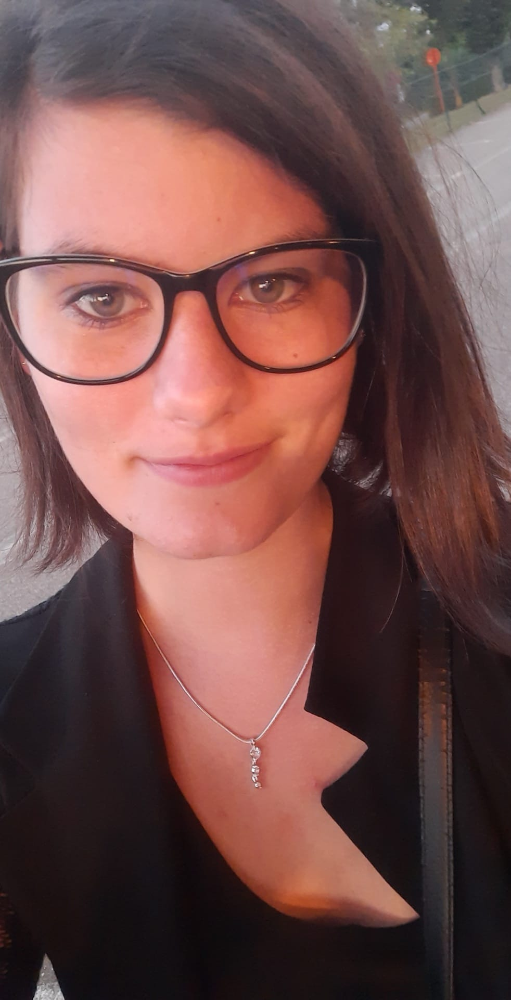

Hallo, mag ik mezelf even voorstellen. Mijn naam is Gwendoline Meykens. Ik ben 24 jaar en woon in Bree. Samen met mijn partner vormen we een samengesteld gezin. Hij heeft namelijk een zoon uit een vorige relatie. Ik ben een grote dierenliefhebber, thuis hebben we 2 katten, een hondje en vissen.
In 2017 ben ik afgestudeerd als Zorgkundige. Ondanks dat ik veel voldoening uit mijn job haalde, was het tijd voor een nieuwe uitdaging. De computerwereld is de toekomst en wou graag meer weten over deze wereld. Aangezien ik vaak creatief bezig ben, was ik op zoek naar een combinatie van computer en creatief zijn en dit heb ik gevonden in webdesign.